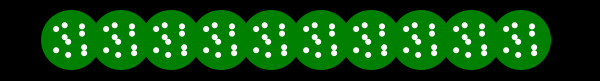

在这课程中，你会使用动画和学习创建简单太空射击类游戏的高级绘制技术。 我已经提供了一个基本骨架结构供你使用，你可以专注于图像绘制。 用户拥有一个太空船能够通过左右箭头左右移动和空格键发射子弹。外星人在屏幕的上方前后移动并随机发射子弹。 当用户的子弹打中外星人时，代码会有一个简单的碰撞检测消灭敌人。所有的图像都是使用矩形表示。 简单地浏览一下并且开始完善这个游戏。
使用精灵图绘制太空船
In the directory with this document and the game*.html files, create a new HTML file called mygame.html and copy game1.html into it. This contains the initial version of the game you saw above.
在该目录中，创建一个新HTML文件，名为mygame.html并复制game1.html代码到里边。 代码中包括了上面游戏的最初版本。
The first thing we will do is give the player's spaceship an upgrade. To do this we will use an image I took from the amazing website LostGarden.com.
首先我们升级用户的太空船。 我们会使用从这个惊艳的网站LostGarden.com的图片实现它。

images/Hunter1.png (scaled 4x)
首先我们需要改变太空船的尺寸以符合图片。我们需要正前方的中心图片，大小为 46*46 像素， 添加下面代码到 mygame.html 的顶部，设置player 对象的尺寸。
var can = document.getElementById("canvas");
var c = can.getContext('2d');
// 新代码
player.width = 46;
player.height = 46;
现在我们需要加载图片到对象中使用。
创建一个变量，名为 ship_image 接着开始调用 loadResources()函数加载图片。
player.width = 46;
player.height = 46;
// 新代码
var ship_image;
loadResources();
function loadResources() {
ship_image = new Image();
ship_image.src = "images/Hunter1.png";
}
接着找到 drawPlayer 函数。
替换最后填充矩形的两行，使用绘制图像代码。
c.fillStyle = "red";
c.fillRect(player.x,player.y, player.width, player.height);
c.drawImage(ship_image,
25,1, 23,23, // 源坐标
player.x, player.y, player.width, player.height // 目标坐标
);
现在看看需要做什么。
太空船精灵图实际上有8帧图片，而我们只需要其中的一帧。
drawImage 函数可以通过设置源和目标坐标绘制精灵图的一部分。
源坐标定义的是从图片的那部分开始截取的坐标及尺寸。
目标坐标定义的是在canvas画布上绘制图像的位置及大小。
改变这些数值就能够创建有趣的图像拉伸，复制，缩放效果。
在该例子中，截图从左边开始25像素，从上开始23距离的部分图片。 然后将截取后的图片添加到画布的太空船的坐标（x, y）和宽高（width,height）。 注意我们设置的宽高接近 46*46。 这个是源尺寸 23*23 的二倍大小。有意为之。 这是一个复古类型游戏，所有我放大图像让它看起来是像素的。
保存文件，刷新浏览器。现在看起来这样：

交互 第二版游戏
图像绘制的太空船 (点击运行)
子弹的精灵图动画
现在需要一些太空船子弹及外星人炸弹的精灵图。 同样我们加载图片到变量中。像这样更新接近上面的代码（最新的代码加粗）。
var ship_image;
var bomb_image;
var bullet_image;
loadResources();
function loadResources() {
ship_image = new Image();
ship_image.src = "images/Hunter1.png";
bomb_image = new Image();
bomb_image.src = "images/bomb.png";
bullet_image = new Image();
bullet_image.src = "images/bullets.png";
}加载以下图片：

快照 images/bullets.png (scaled 4x)

快照 images/bomb.png (scaled 4x)
上面的图片上包括多帧精灵图。 然而，这次我们需要每一帧。 每一张图片都是动画过程中的一帧。 在图像循环中会在画布上制造一个视觉的动画。 跟之前所做的一样，绘制整张图像中的一部分，但这次需要每一帧中改变图像的坐标。
function drawPlayerBullets(c) {
c.fillStyle = "blue";
for(i in playerBullets) {
var bullet = playerBullets[i];
var count = Math.floor(bullet.counter/4);
var xoff = (count%4)*24;
//c.fillRect(bullet.x, bullet.y, bullet.width,bullet.height);
c.drawImage(
bullet_image,
xoff+10,0+9,8,8, // 源
bullet.x,bullet.y,bullet.width,bullet.height // 目标
);
}
}上面的代码跟我们之前写的代码很像，除了变量 xoff， count 和bullet.counter。 每个子弹都有自身的计算器。该值从0开始当子弹创建之后每帧中自增1。 变量count等于计算器除4。动画中的一些帧以60fps运行，运动太快了以致看不到，为了减慢速度除以4。
xoff 是用 count 模4，xoff 在0~3之间重复循环。接着乘以24，得到的就是每帧图片的宽度。
xoff 会在数值0,24,48,72中重复，提供一个稳定的偏移值。（额外的+10是由于图片左边的空白）
上面的代码增加了子弹的动画。 现在对炮弹在函数 createEnemyBullet 和 drawEnemyBullets 中做相同的代码改变。
function createEnemyBullet(enemy) {
return {
x:enemy.x,
y:enemy.y+enemy.height,
width:4,
height:12,
width:30,
height:30,
counter:0,
}
}
function drawEnemyBullets(c) {
for(var i in enemyBullets) {
var bullet = enemyBullets[i];
c.fillStyle = "yellow";
c.fillRect(bullet.x, bullet.y , bullet.width, bullet.height);
var xoff = (bullet.counter%9)*12 + 1;
var yoff = 1;
c.drawImage(bomb_image,
xoff,yoff,11,11, // 源
bullet.x,bullet.y,bullet.width,bullet.height // 目标
);
}
}
注意上面的代码，我们需要改变敌人默认炮弹的尺寸到30。
那么碰撞检测代码就会使用跟图片一样使用相同的尺寸。
在 firePlayerBullet 函数中的太空船的字符也需要同样操作
function firePlayerBullet() {
// 创建子弹
playerBullets.push({
x: player.x,
x: player.x+14,
y: player.y - 5,
width:10,
height:10,
width:20,
height:20,
counter:0,
});
}
现在我们的游戏看起来这样。如果你有任何问题，跟 game3.html 文件对照你的代码。

交互 第三版游戏
绘制精灵图敌人 (点击运行)
外星人程序图形
现在重新绘制外星人，而不是使用精灵图。使用程序来完成，这就是说所有的图像会使用代码完成而不是通过绘图软件预先绘制。 我们的目标是一个绿色的圆形填充了一连串漂浮小白球。看起来像这样：

因为这会彻底改变敌人的绘制代码，新建函数 drawEnemy()。
首先修改 drawEnemies()< 委托给 drawEnemy函数：
function drawEnemies(c) {
for(var i in enemies) {
var enemy = enemies[i];
if(enemy.state == "alive") {
c.fillStyle = "green";
drawEnemy(c,enemy,15);
}
if(enemy.state == "hit") {
c.fillStyle = "purple";
enemy.shrink--;
drawEnemy(c,enemy,enemy.shrink);
}
//this probably won't ever be called.
if(enemy.state == "dead") {
c.fillStyle = "black";
c.drawEnemy(c,enemy,15);
}
}
}
新建函数 drawEnemy() 代码如下：
function drawEnemy(c,enemy,radius) {
if(radius <=0) radius = 1;
var theta = enemy.counter;
c.save();
c.translate(0,30);
// 绘制背景圆
circlePath(c, enemy.x, enemy.y, radius*2);
c.fill();
// 绘制漂浮点
for(var i=0; i<10; i++) {
var xoff = Math.sin(toRadians(theta+i*36*2))*radius;
var yoff = Math.sin(toRadians(theta+i*36*1.5))*radius;
circlePath(c, enemy.x + xoff, enemy.y + yoff, 3);
c.fillStyle = "white";
c.fill();
}
c.restore();
}
function toRadians(d) {
return d * Math.PI * 2.0 / 360.0;
}
function circlePath(c, x, y, r) {
c.beginPath();
c.moveTo(x,y);
c.arc(x,y, r, 0, Math.PI*2);
}
上面的代码有点复杂，我们一步一步详细分解。
drawEnemy 函数包括三个参数：
绘制上下文 c，绘制的敌人enemy对象以及旋转球的半径radius。
首先基于 enemy 对象的属性counter计算出角度 theta。在每帧中这个角度会让球的位置稍微移动一点。
下一步绘制圆形的背景并填充当前的颜色。
circlePath 是绘制原的函数。
最后循环10次绘制10个小白球。 每个圆的位置来自xoff以及yoff的偏移量。 看起来复杂实际上很简单。 x坐标值就是当前的角度的正弦值乘以半径。y坐标值就是当前的角度的正弦乘以半径。 为了让每帧的x,y值有些许变化，所以给x角度增加了：i*36*2。同样y的角度也增加了：i*36*1.5。 如果调整的值一样，那么点的运动就是一条直线。为了让它们运动不同所以使用了螺旋模式。 我选择这些特定的数值，仅仅就是随意的。 这样有时会发现一些有趣的运动，你也可以用你喜欢的改变这些值。试试使用1.5到3.0观察对输出的影响。
还有最后一点修改，让游戏结束之后的文本淡入淡出而非立即显示。
已经有 overlay 包含计数器，随着时间来调整透明度alpha。
我们只需要重载函数 drawOverlay 设置globalAlpha的值然后绘制文本：
function drawOverlay(c) {
if(overlay.counter == -1) return;
//fade in
var alpha = overlay.counter/50.0;
if(alpha > 1) alpha = 1;
c.globalAlpha = alpha;
c.save();
c.fillStyle = "white";
c.font = "Bold 40pt Arial";
c.fillText(overlay.title,140,200);
c.font = "14pt Arial";
c.fillText(overlay.subtitle, 190,250);
c.restore();
}现在游戏的外观。点击查看。

交互第四版游戏
程序动画的外星人(点击运行)
爆炸粒子模拟器
当用户太空船死亡时，使用粒子模拟器增加爆炸效果。 首先我们将用户爆炸放进分离函数里边，像这样：
function drawPlayer(c) {
if(player.state == "dead") return;
if(player.state == "hit") {
c.fillStyle = "yellow";
c.fillRect(player.x,player.y, player.width, player.height);
drawPlayerExplosion(c);
return;
}
c.drawImage(ship_image,
25,1, 23,23, // 源坐标
player.x, player.y, player.width, player.height // 目标坐标
);
}现在我们创建一个简单的粒子系统。回想起之前的课程，粒子系统仅仅是一组粒子对象的集合，每一帧都更新并绘制。 就爆炸效果来说，我们想所有的粒子从用户所在的位置开始以不同的速度随机向四周爆炸。 创建粒子的代码看起来这样：
var particles = [];
function drawPlayerExplosion(c) {
// 开始
if(player.counter == 0) {
particles = []; // 清除之前的例子
for(var i = 0; i<50; i++) {
particles.push({
x: player.x + player.width/2,
y: player.y + player.height/2,
xv: (Math.random()-0.5)*2.0*5.0, // x 加速度
yv: (Math.random()-0.5)*2.0*5.0, // y 加速度
age: 0,
});
}
}留意到加速度的值都是随机数。 Math.random 返回0~1直接的随机小数。减去0.5然后乘以2，然后我们得到一个 -1 到 1 的小数。 之后缩放倍数让游戏中的爆炸快一些。请随意调整 5 的值。
现在需要更新并绘制每一个例子：
// 更新并绘制
if(player.counter > 0) {
for(var i=0; i<particles.length; i++) {
var p = particles[i];
p.x += p.xv;
p.y += p.yv;
var v = 255-p.age*3;
c.fillStyle = "rgb("+v+","+v+","+v+")";
c.fillRect(p.x,p.y,3,3);
p.age++;
}
}
每个粒子的最新位置就是原来的位置加上加速度。 之后我们计算基于粒子age属性的颜色值 v。 我们处理rgb的值从255开始然后随着时间下降，最后让颜色从白色淡出到黑色。
这里的是最总的游戏截图：

交互 第五版游戏
已完成游戏 (点击运行)
总结
This hands on lab chapter just barely touches what's possible with the HTML Canvas tag. I encourage you to play around with this game sample more by adding a background, changing colors, adjusting animation speeds, and choosing new sprites.
这个章节仅仅触及了HTML canvas 标签能做的东西的可能性。 我希望你能够完善这个游戏案例，添加背景，改变颜色，调整动画速度和挑选新的精灵图。
所有有效Lost Garden 图片全集都在这，我非常推荐你读读。